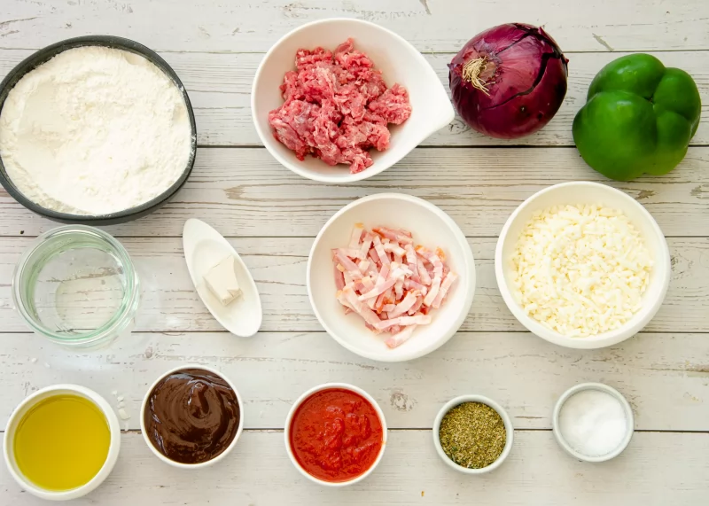

Plato 1: Pizza de barbacoa
La pizza de barbacoa es una pizza hecha con salsa barbacoa en lugar de salsa de tomate, típicamente cubierta con pollo, carne, cebolla y queso.
En promedio, una porción (aprox. 100 g) tiene entre 220 y 300 calorías, aunque esto puede variar según los ingredientes y el tamaño.

Ingredientes
- Masa para pizza
- Salsa de tomate (preferiblemente casera o de buena calidad)
- Salsa barbacoa
- Queso mozzarella fresco
- Hojas de albahaca fresca
- Sal al gusto

Preparación
- Precalentar el horno a alta temperatura, alrededor de 250 °C.
- Extender la masa finamente y colocarla en una bandeja o piedra para pizza.
- Cubrir la masa con una capa de salsa de tomate.
- Añadir la mozzarella en rodajas y esparcir las hojas de albahaca.
- Rociar con aceite de oliva y un poco de sal.
- Hornear de 8 a 10 minutos o hasta que los bordes estén dorados y el queso derretido.

Jefe: Xiang Junhao
Bar: Bar Emigrante
📋 Volver al menu